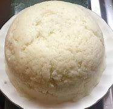

Ugali

How to make Ugali the Kenyan way
Ugali is a staple food in Kenya. It is a common meal found in Kenyan homes and most of us can not even go a week without cooking it. That’s why today we are going to learn how to cook ugali Kenyan way. We will look into what is required, the ingredients and accompaniments too.
Ingredients
- A medium sufuria
- 2 cups of water
- 1 and a half cups of white cornflour
- Wooden cooking stick
Steps to follow
- Pour the 2 cups of water into the medium sufuria
- Put the water to boil.
- Add the white cornflour, you could start with one cup first.
- Do not pour the Cornflour or Unga at a go, do it in small chunks while stirring the mixture to mix
- The combination in the sufuria will start thickening
- Once it’s attained the thickness you would want, stop adding the flour as this might cause the Ugali not to cook well.
- Keep turning the ugali from side to side to ensure that it cooks evenly.
- Reduce the amount of heat in order to prevent the ugali from burning before it’s well cooked.
- For it to be evenly cooked, it might take around 20-30 minutes.
- Once cooked, you will smell a sweet aroma, turn it to a serving plate.
Back to Main Page